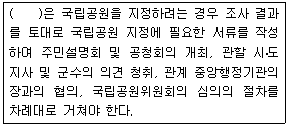
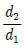
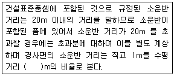
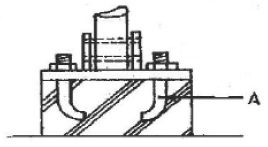
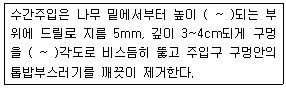
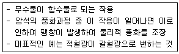

조경산업기사 (2012-03-04 기출문제)
1과목: 조경계획 및 설계
1. 국토의 계획 및 이용에 관한 법률에 따라 개발행위의 허가를 받아야 하는 경우에 해당하지 않는 것은?
- 도시계획사업에 의한 토지의 형질 변경
- 건축물의 건축 또는 공작물의 설치
- 토지분할(건축법에 따른 건축물이 있는 대지는 제외)
- 자연환경보전지역에 물건을 2개월 쌓아놓는 행위
(정답률: 59%)

2. 범죄발생률이 높은 아파트 단지 내부에서 주민들에게 귀속감을 주고, 공간에 대한 소유감을 배양시키기 위하여 담장을 설치하고, 문주를 만드는 이유는 인간의 행태속성 중 어디에 기인한 것인가?
- 개인적 공간(Personal Space)
- 영역성(Territoriality)
- 혼잡(Crowding)
- 시각적 선호(Visual Preference)
(정답률: 89%)
3. 도시계획시설의 결정ㆍ구조 및 설치기준에 관한 규칙에서 구분된 형태별 도로의 설명으로 틀린 것은?
- 일반도로 : 폭 4m 이상의 도로로서 통상의 교통소통을 위하여 설치되는 도로
- 자전거전용도로 : 하나의 차로를 기준으로 폭 1.5m 이상의 도로로서 자전거의 통행을 위하여 설치하는 도로
- 보행자전용도로 : 폭 1.2m 이상의 도로로서 운전자의 안전하고 편리한 통행을 위하여 설치하는 도로
- 고가도로 : 시ㆍ군내 주요지역을 연결하거나 시ㆍ군 상호간을 연결하는 도로로서 지상교통의 원활한 소통을 위하여 공중에 설치하는 도로
(정답률: 82%)
4. 조경 부지의 생태적 분석 과정을 통하여 토지이용 적지분석(土地利用適地分析)을 할 때 사용하는 방법이 아닌 것은?
- 컴퓨터에 의한 방법
- 네트워크 방법
- 점수 부과법(scaling method)
- 도면 결합법(overlay method)
(정답률: 71%)
5. 자동차 교통과 보행자 교통의 마찰을 피하고 안전하게 보행할 수 있도록 만든 것은?
- 몰(mall)
- 패스(path)
- 결절점(node)
- 랜드마크(landmark)
(정답률: 85%)
6. 다음 국립공원의 설명 중 ( )안에 적합한 것은?

- 환경부장관
- 산림청장
- 국토해양부장관
- 농림수산식품부장관
(정답률: 81%)
7. 우리나라 조경관련 문헌이 바르게 짝지어 진 것은?
- 이중환(李重煥) - 임원경제지(林園經濟志)
- 이수광(李晬光) - 촬요신서(撮要新書)
- 강희안(姜希顔) - 색경(穡經)
- 홍만선(洪萬選) - 산림경제(山林經濟)
(정답률: 90%)
8. 천원지방(天圓地方)의 사상을 잘 표현한 건물은?
- 존덕정(尊德亭)
- 경회루(慶會樓)
- 관람정(觀纜亭)
- 교태전(交泰殿)
(정답률: 65%)
9. 일반시민에 의해 최초로 설립되었으며 도시공원 설치의 계기가 된 공원은?
- Franklin Park
- Hyde Park
- Regent Park
- Birkenhead Park
(정답률: 85%)
10. 조경 유적 중 가장 굴곡이 많은 호안(護岸)을 가진 원지(苑池)는?
- 비원의 부용지(芙蓉池)
- 백제의 부여 궁남지(宮南池)
- 신라의 안압지(雁壓池)
- 완도군 보길도의 세연지(洗然池)
(정답률: 80%)
11. 다음 중 조선왕릉의 조경관리를 담당하던 종9품의 관직은?
- 동산바치
- 장원서
- 내원서
- 능참봉
(정답률: 66%)
12. 다음 중 일본조경의 특징 연결로 옳은 것은?
- 삼보원 - 다정(茶庭)
- 대선원 서원 - 평정고산수
- 금각사 정원 - 정토 정원
- 용안사 석정 - 축산고산수
(정답률: 68%)
13. 그리스 시대 신화와 관련되어 씨앗을 포트나 그릇에 심어 지붕에 올려놓은 데서 유래한 것은?
- 아고라(Agola)
- 프라자(Plazza)
- 아도니스원
- 포름(Form)
(정답률: 86%)
14. 파티오(Patio)는 어느 나라 정원의 형태에서 많이 볼 수 있는가?
- 로마
- 프랑스
- 스페인
- 이탈리아
(정답률: 83%)
15. 순간적 경관에 속하지 않는 것은?
- 잔잔한 호수에 비친 영상
- 바람에 나부끼는 낙엽
- 수엽(樹葉)이나 꽃의 생김새
- 짐승의 동작
(정답률: 91%)
16. 주거단지 내 가로망 패턴 중 격자형 패턴의 특징에 해당되는 것은?
- 동선이 길어질 수 있는 단점이 있다.
- 통과 교통이 적어져서 안정성이 확보된다.
- 동선간의 우선순위가 명확하여 접근로의 혼동이 적다.
- 토지이용상 가장 효율적이나 지형의 변화가 심한 곳에서는 급구배가 발생하기 쉽다.
(정답률: 74%)
17. Munsell 표색계에 대한 설명 중 틀린 것은?
- 색상ㆍ명도/채도로 색채를 표시한다.
- 색상환의 대각선상의 색상은 보색이다.
- 색입체는 완전 구형이다.
- 색입체의 중심은 명도축이다.
(정답률: 69%)
18. 제도에 사용되는 글자에 관한 설명 중 옳지 않은 것은?
- 숫자는 아라비아 숫자를 원칙으로 한다.
- 문장은 왼쪽에서부터 가로쓰기를 원칙으로 한다.
- 글자의 크기는 각 도면의 상황에 맞추어 알아보기 쉬운 크기로 한다.
- 글자체는 수직 또는 15° 경사의 굴림체로 쓰는 것을 원칙으로 한다.
(정답률: 80%)
19. 최대시의 이용자 수가 2000명, 주차장 이용률이 90%, 차량 1대당 수용인원 수는 20명, 1대당 주차면적은 40m2 라면 주차장의 면적은?
- 360m2
- 1400m2
- 3600m2
- 4000m2
(정답률: 76%)
20. 관광시설지의 소각로 위치 선정에 있어서 유의해야 할 사항으로 옳지 않은 것은?
- 이용자의 시선에 잘 띄는 곳을 선정한다.
- 가급적 교목으로 둘러 싸여 있도록 한다.
- 분진, 연기, 악취가 이용자에게 미치지 않도록 한다.
- 쓰레기 운반 및 소각 후 재를 처리하기 용이한 곳을 선정한다.
(정답률: 90%)
2과목: 조경식재
21. 다음 목련과(科) 중 원산지가 우리나라인 것은?
- Magnolia liliflora Desr.
- Magnolia denudata Desr.
- Magnolia grandiflora L.
- Magnolia kobus DC.
(정답률: 68%)
22. 다음 중 가을 단풍에 있어 황색을 보이게 하는 색소는?
- carotene
- phicobilin
- anthocyanin
- monoterpere
(정답률: 36%)
23. 가을에 꽃향기를 풍기는 수종은?
- Prunus mume Siebold & Zucc.
- Daphne odora Thunb.
- Osmanthus fragrans var. aurantiacus Makino
- Gardenia jasminoides Ellis
(정답률: 57%)
24. 수관의 질감(texture)이 거친 느낌을 주어 서양식 건물에 가장 잘 어울리는 수종은?
- Rhododendron schlippenbachii Maxim
- Fatsia japonica Decne. & Planch.
- Albizia julibrissin Durazz.
- Spiraea prunifolia for. simpliciflora Nakai
(정답률: 52%)
25. 다음 수목의 생장도(生長度)에 관한 설명으로 옳지 않은 것은?
- 양수는 음수에 비해 어릴 때의 생장이 왕성하다.
- 생장이 빠른 나무는 일반적으로 재질이 약하다.
- 전나무는 어릴 때 생장속도가 빠르나 어느 정도 자란 뒤에는 더디다.
- 새로 자라는 눈의 신장생장은 5월 하순 내지 6월 상순에 끝나는 것이 일반수종의 습성이다.
(정답률: 70%)
26. 달리고 있는 차량의 소음은 거리가 3배 멀어질 때 얼마 만큼 감소하게 되는지 식(D)= L1-L2=10log10

(dB)을 이용하여 계산하면 약 얼마인가?(단, 거리d1지점의 음압레벨을 L1, 거리 d2지점의 음압레벨을 L2라 한다.)- 3dB
- 5dB
- 7dB
- 9dB
(정답률: 63%)
27. 다음 생육별 구분에 따른 식물 구분이 옳은 것은?(단, 내수성 식물을 습성, 정수, 부엽, 침수식물로 구분한다.)
- 침수식물 - 석창포
- 정(추)수식물 - 부들
- 습성식물 - 물수세미
- 부엽식물 - 거머리말
(정답률: 83%)
28. 소나무 이식시 줄기에 새끼를 감고 진흙으로 수피를 감싸는 가장 중요한 목적은?
- 소나무의 미관상 증진을 위해
- 이식후 수목의 C/N율을 맞추기 위해
- 소나무 좀벌레의 침입방지를 위해
- 수분부족과 강한 광선에 의한 수피의 피소를 막기 위해
(정답률: 71%)
29. 다음 중 학명의 장점이 아닌 것은?
- 정확성이 높다.
- 쉽게 배울 수 있고 기억하기 쉽다.
- 전 세계적으로 동일하게 통용된다.
- 명명법이 국제 식물 명명규칙에 의하여 통제된다.
(정답률: 87%)
30. 엽연(Leaf margin)이 매끈하고 톱니 같은 것이 없는 전연(entire) 수종은?
- 산사나무
- 왕버들
- 은사시나무
- 돈나무
(정답률: 71%)
31. 다음 식물의 열매 모양이 삭과(蒴果, capsule)로 분류되지 않는 것은?
- 무궁화
- 자귀나무
- 진달래
- 수수꽃다리
(정답률: 55%)
32. 다음 중 그 지역의 위치를 알려줌과 동시에 상징성, 식별성이 높아 경관 향상에 도움을 주는 식재는?
- 보호식재
- 지표식재
- 차폐식재
- 경관식재
(정답률: 83%)
33. 다음 중 콩과에 속하지 않은 종은?
- Pueraria lobata Ohwi
- Wisteria floribunda DC. for fleribunda
- sophora japonica L
- Rhus javanica L
(정답률: 40%)
34. 소나무류(hard pine)와 잣나무류(soft pine)의 식별에 있어 옳지 않은 것은?
- 잣나무류는 잎이 5개 이고, 소나무류는 잎이 2~3개 이다.
- 잣나무류의 유관속은 1개이고, 소나무류의 유관속은 2개이다.
- 잣나무류는 실편(實片)은 끝이 얇고 가시가 없으며, 소나무류의 실편은 끝이 두껍고 가시가 있다.
- 잣나무류는 침엽이 달렸던 자리가 도드라졌고, 소나무류는 잎이 달렸던 자리가 밋밋하다.
(정답률: 67%)
35. Philadelphus schrenkii 의 꽃 색깔은 무엇인가?
- 적색
- 황색
- 백색
- 자주색
(정답률: 61%)
36. 다음 중 능수버들, 현사시나무, 양버즘나무의 공통점은?
- 암수딴그루이다.
- 충매화 수종이다.
- 종모(씨털)가 날린다.
- 우니나라 자생종이다.
(정답률: 72%)
37. 종자를 정선한 후 곧 노천매장해야 할 수종으로만 짝지어진 것은?
- 소나무, 무궁화
- 오리나무, 해송
- 삼나무, 전나무
- 잣나무, 은행나무
(정답률: 63%)
38. 토양단면(soil profile) 중 미생물과 식물활동이 왕성화고 낙엽의 분해 생산물이 침투되어 흑갈색을 띄며, 기후, 식생 등의 영향을 직접 받아 가용성염기류가 아래층으로 이동하는 토양 단면층은?
- 유기물층(0층)
- 용탈층(A층)
- 집적층(B층)
- 모재층(C층)
(정답률: 68%)
39. 다음 중 같은 과(科)에 속하지 않는 수종은?
- 후박나무
- 다릅나무
- 월계수
- 생강나무
(정답률: 43%)
40. 단풍나무류는 여러 종이 있는데 사람들에게 친근 감을 갖게 하는 수종이다. 다음 중 이 식물에 대한 특징으로 옳지 않은 것은?
- 햇빛이 잘 들면서도 습기 있는 비옥지를 좋아한다.
- 잎 모양에 따른 분류 중 네군도단풍은 복엽에 해당된다.
- 강 전정으로 굵은 가지를 잘라 수형을 조성한다.
- 성목을 이식했을 때는 수세가 약해진다.
(정답률: 73%)
3과목: 조경시공
41. 구조물에 하중이 작용하면 각 지점(支點)에 생기는 힘을 무엇이라 하는가?
- 반력(反力)
- 합력(合力)
- 분력(分力)
- 우력(偶力)
(정답률: 82%)
42. 기성금에 대한 설명으로 옳은 것은?
- 공사가 진행되면서 시공이 완성된 부분에 대해 도급자가 발주자로부터 지급받는 대금이다.
- 공사가 완공되어 계약한 공사대금을 발주자가 지불하는 금액이다.
- 공사계약이 체결되었을 때, 시공 준비를 위해 계약금액의 일정률을 발주자로부터 지급받는 금액이다.
- 정해진 공사 기간 내에 공사를 완성하지 못했을 때 도급자가 발주자에게 납부하는 금액이다.
(정답률: 71%)
43. 식생(植生)의 생육이 적당하지 않고 용수(湧水)가 있는 절토 비탈면이 강우로 자주 유실되어 유지관리가 어려운 곳에 가장 적합한 비탈면 보호 공법은? (단, 비탈면 구배는 1:0.8 이하의 완구배의 비탈면)
- 콘크리트 격자형 블록 및 심줄박기공법
- 편책공법
- 시멘트모르타르 및 콘크리트 뿜어 붙이기공법
- 낙석방지망공법
(정답률: 67%)
44. 목재의 성질 중 단점에 해당하는 것은?
- 구조재료 중 중량이 가볍다.
- 열전도율이 작다.
- 산에 대한 저항성이 크다.
- 수분 흡수성이 강하다.
(정답률: 75%)
45. 토양의 구조에 대한 설명 중 옳은 것은?
- 판상구조는 수직 배수가 잘되며 충적토에서 발견할 수 있다.
- 주상구조는 수직배수가 잘 안되며, 찰흙의 함량이 많은 표토에서 보기 쉽다.
- 괴상구조는 각괴(角塊)와 원괴(圓塊)로 나누어지며 표토에서 많이 발견된다.
- 입상구조는 서로 연하여 겹치거나 쌓여서 입단(粒 團)사이의 공극에 물이 저장되어 생물생육에 적합한 조건이다.
(정답률: 71%)
46. 아래 설명의 ( )에 적합한 것은?

- 2
- 4
- 6
- 8
(정답률: 78%)
47. 다음 광원(光源)에 대한 설명으로 옳지 않은 것은?
- 할로겐등은 수은등을 보완하여 만든 것으로 수은등 보다 다소 수명이 짧은 편이다.
- 고압수은등은 나트륨등 보다 물상(物像)의 분해 능력이 좋아 공원에 사용한다.
- 백열전구는 광색이 따뜻한 느낌을 주기 때문에 휴식을 위한 자리의 조명에 알맞다.
- 고압나트륨등은 노란색으로 발광되며, 미적 효과를 연출하기 용이하지만, 물체의 색을 구별하기 상당히 어려우며, 곤충이 모여들지 않는 특징이 있다.
(정답률: 59%)
48. 시공현장에서 기본적인 안전관리의 대책으로 옳지 않은 것은?
- 안전관리 기구의 구성
- 매일 현장점검
- 응급시설의 완비
- 준공일의 단축 일정
(정답률: 84%)
49. 목재의 탄성적 성질의 영향인자에 대한 설명으로 옳지 않은 것은?
- 식물체의 리그닌은 강성을 크게 한다.
- 목재비중이 커지면 세포의 강성이 증가된다.
- 옹이에 의해 그 주위에 뒤틀린 목리가 형성되면 강성은 감소된다.
- 목재의 열분해 이하의 온도에서 온도가 증가하면 강성은 증가한다.
(정답률: 64%)
50. 네트워크 공정표 작성에 대한 설명으로 옳지 않은 것은?
- 동그라미(○)는 결합점(Event, node)이라 한다.
- 동일 네트워크에 있어서 동일 번호가 2개 이상 있어서는 안 된다.
- 작업(activity)은 화살표(→)로 표시하고, 화살표의 시작과 끝에는 동그라미(○)를 표시한다.
- 일반적으로 화살표(→)의 윗부분에 소요시간을, 밑 부분에 작업명을 표기한다.
(정답률: 76%)
51. 다음 불도저(bull dozer)의 특성에 대한 설명으로 옳지 않은 것은?
- 작업 범위는 소형 50m에서 대형 100m 정도이다.
- 무한궤도식(無限軌道式)은 연약지반에서도 어느 정도 작업이 용이하다.
- 토사의 절토, 성토, 정지, 운반 등의 작업에 쓰이는 대표적인 토공 기계이다.
- 절토작업시 오르막경사에는 능률이 상승되고 내리막경사에서는 능률이 저하된다.
(정답률: 75%)
52. 콘크리트 옹벽의 활동에 대한 안정조건은 토질의 종류에 따라 마찰계수 값이 다르게 적용된다. 이와 관련하여 콘크리트에 대한 자갈의 마찰계수 값으로 옳은 것은?
- 0.20
- 0.40
- 0.50
- 0.90
(정답률: 53%)
53. 금속의 주요한 특징으로 옳지 않은 것은?
- 열전도율, 전기전도율이 크다.
- 일반적으로 결정구조를 갖고 있다.
- 일반적으로 소성가공이 가능하다.
- 순수한 금속일수록 저온에서의 전자이동이 어려워 진다.
(정답률: 73%)
54. 클링커와 고로슬래그, 석고를 혼합 분쇄하여 제조된 시멘트로 화학물질에 견디는 힘이 강해서 하수도공사나 바다 속의 공사에 주로 사용되는 것은?
- 조강포틀랜드시멘트
- 보통포틀랜드시멘트
- 중용열포틀랜드시멘트
- 고로시멘트
(정답률: 70%)
55. 취성(脆性, brittleness)이 큰 재료로만 짝지어진 것은?
- 주철, 유리
- 목재, 섬유
- 납, 금
- 고무, 구리
(정답률: 76%)
56. 콘크리트의 균열발생 방지법으로 옳지 않은 것은?
- 팽창재를 사용한다.
- 물시멘트비를 작게 한다.
- 단위시멘트량을 증가시킨다.
- 타입시 콘크리트의 온도상승을 작게 한다.
(정답률: 65%)
57. 평판측량에서 이용되는 앨리데이드의 시준판에 새겨진 한 눈금의 크기는 얼마인가?
- 전ㆍ후 시준판의 간격의 1/100
- 앨리데이드 길이의 1/100
- 전ㆍ후 시준판의 간격의 1/200
- 앨리데이드 길이의 1/200
(정답률: 55%)
58. 입찰방식 중 PQ(pre-qualification)제도에 관한 설명으로 틀린 것은?
- 매 공사 혹은 입찰 때마다 실시한다.
- 입찰 참가 자격을 사전 심사하는 제도를 말한다.
- PQ제도를 통해 발주자는 각 업체의 능력을 정확히 파악할 수 있다.
- 능력있는 시공업체를 평가하기 위해 일정 기간마다 주기적으로 시행한다.
(정답률: 63%)
59. 다음 그림에서 A는 무엇을 나타내는가?

- 철근
- 앵커볼트
- 와이어 메쉬
- 너트
(정답률: 77%)
60. 설계서의 단위 표준에 관한 설명으로 옳은 것은?(단, 건설표준품셈을 적용한다.)
- 공사 연장 : km
- 떼 : mm
- 견치돌 : m
- 벽돌 : mm
(정답률: 71%)
4과목: 조경관리
61. 잔디밭에 많이 발생하는 잡초가 아닌 것은?
- 토끼풀
- 올미
- 질경이
- 바랭이
(정답률: 78%)
62. 레크레이션 수용능력의 결정인자는 고정인자와 가변인자로 구분된다. 다음 중 고정적인 결정인자에 해당되는 것은?
- 대상지의 크기와 형태
- 특정 활동에 대한 참여자의 반응 정도
- 대상지 이용의 영향에 대한 회복 능력
- 기술과 시설의 도입으로 인한 수용능력 자체의 확장 가능성
(정답률: 57%)
63. 초화류 재배관리에 바람직한 토양조건으로 가장 거리가 먼 것은?
- 통기성
- 호흡성
- 배수성
- 보비성
(정답률: 59%)
64. 대추나무 빗자루병에 대한 설명으로 옳지 않은 것은?
- 병원체가 나무 전체에 분포하는 전신성병이다.
- 벚나무는 대추나무 빗자루병의 기주식물이다.
- 빗자루병에 걸린 나무는 결실이 되지 않는다.
- 마름무늬매미충(Hishimonus sellatus)에 의해 매개 된다.
(정답률: 59%)
65. 병원균을 영양배지에 접종한 후 포자나 균총을 관찰하여 진단하는 방법을 무엇이라 하는가?
- 육안 진단
- 배양적 진단
- 해부학적 진단
- 생리화학적 진단
(정답률: 80%)
66. 다음 [보기] 중 ( )안에 들어갈 알맞은 범위는?

- 25 ~ 30cm, 5°~ 10°
- 5 ~ 10cm, 20°~ 30°
- 25 ~ 30cm, 50°~ 60°
- 5 ~ 10cm, 50°~ 60°
(정답률: 71%)
67. 잔디밭의 관수에 대한 설명으로 적당하지 않은 것은?
- 갓 조성된 잔디밭에는 수압을 약하게 하여 관수한다.
- 관수는 보통 저녁이나 야간에 하는 것이 좋다.
- 잔디의 밀도가 높을수록 지표면의 수분증발이 적으므로 관수의 양이 적어진다.
- 잔디의 사용이 많은 지역일수록 관수량 및 관수의 회수가 많아야 한다.
(정답률: 70%)
68. 안전사고 발생시의 사고처리 순서로서 알맞은 것은?
- 관계자에의 통보→사고자의 구호→사고상황의 파악 및 기록→사고책임의 명확화
- 사고자의 구호→관계자에의 통보→사고상황의 파악 및 기록→사고책임의 명확화
- 관계자에의 통보→사고상황의 파악 및 기록→사고자의 구호→사고책임의 명확화
- 사고자의 구호→사고상황의 파악 및 기록→관계자에의 통보→사고책임의 명확화
(정답률: 69%)
69. 식물의 수분상태를 조절하는데 가장 중요한 역할을 하는 필수원소는?
- Fe
- Mg
- Ca
- K
(정답률: 62%)
70. 파이토플라스마(Phytoplasma)는 다음 중 어느 것에 감수성이 있는가?
- Benlate
- Penicillin
- Tetracycline
- Streptomycin
(정답률: 64%)
71. 다음 [보기]는 암석의 화학적 풍화작용 중 무엇을 설명한 것인가?

- 가수분해(hydrolysis)
- 산화작용(oxidation)
- 수화작용(hydration)
- 탄산화작용(carbonation)
(정답률: 58%)
72. 식물의 병반이나 상처부위에 직접 발라서 병을 방제하는 방법은?
- 분의법
- 독이법
- 도포법
- 관주법
(정답률: 87%)
73. 방치하였을 때 우수가 침투하여 노상이나 노체에 현저한 파손을 초래함으로써 발생 즉시 보수하여야 하는 아스팔트 콘크리트 포장 파손의 유형은?
- 박리(剝離)
- 표면연화(軟化)
- 균열(龜裂)
- 파상(波狀)의 요철
(정답률: 85%)
74. 벚나무에 피해가 심한 복숭아유리나방의 피해방제를 위한 약제 살포는 어느 시기에 2~3회 수간 살포하여야 하는가?
- 성충우화 최성기인 7~8월
- 부화유충 최성기인 7~8월
- 성충우화 최성기인 5~6월
- 부화유충 최성기인 5~6월
(정답률: 50%)
75. 다음 엽면시비에 관한 설명으로 틀린 것은?
- 주로 물에 비료를 희석하여 살포한다.
- 빠른 효과를 위하여는 고농도로 희석하여 연속처리 한다.
- 미량원소 중 체내 이동이 잘 안되는 Fe, Mn 등의 결핍시에 활용된다.
- 수용액을 고압분무기로 잎에 직접 뿌려 주는 방법으로서 수용성 비료를 사용해야 한다.
(정답률: 79%)
76. 소나무의 새순을 치는 작업은 어디에 목적을 두고 있는가?
- 생장억제
- 갱신을 위해서
- 생리현상 조절
- 생장조장
(정답률: 73%)
77. 비탈면 암반 녹화안정공법의 하나인 시멘트 모르타르 뿜어붙이기 공법을 사용할 경우 뿜어붙이기의 적합한 두께는?
- 2 ~ 4cm
- 5 ~ 10cm
- 10 ~ 15cm
- 15 ~ 25cm
(정답률: 63%)
78. 다음 중 정지, 진정의 일반원칙에 해당되지 않는 것은?
- 무성하게 자란 가지는 제거한다.
- 지나치게 길게 자란 가지는 제거한다.
- 수목의 주지는 하나로 자라게 한다.
- 평행지가 되도록 유인한다.
(정답률: 75%)
79. 다음 중 분열조직을 가해하는 천공성 해충이 아닌것은?
- 미끈이하늘소
- 박쥐나방
- 버들바구미
- 참나무재주나방
(정답률: 59%)
80. 농약의 성분이 20% 인 분제 5kg을 5%의 분제로 만들려면 희석용 증량제가 몇 kg 더 필요한가?
- 10kg
- 15kg
- 20kg
- 25kg
(정답률: 56%)